공조냉동기계산업기사 (2013-06-02 기출문제)
1과목: 공기조화
1. 난방부하는 어떤 기기의 용량을 결정하는 데 기초가 되는가?
- 공조장치의 공기냉각기
- 공조장치의 공기가열기
- 공조장치의 수액기
- 열원설비의 냉각탑
(정답률: 87%)

2. 가스난방에 있어서 실의 종손실열량이 200,000kcal/h, 가스의 발열량이 5,000kcal/m3, 가스소요량이 60m3/h일 때 가스스토브의 효율은 약 얼마인가?
- 67%
- 80%
- 85%
- 90%
(정답률: 67%)
3. 상당 증발량이 2,500kg/h이고, 급수온도가 30℃, 발생증기 엔탈피가 635.2kcal/kg일 때 실제 증발량은 약 얼마인가?
- 2,226kg/h
- 2,2249kg/h
- 2,149kg/h
- 2,048kg/h
(정답률: 47%)
4. 공기조화방식의 열매체에 의한 분류 중 냉매방식의 특징으로 옳지 않은 것은?
- 유닛에 냉동기를 내장하므로 사용시간에만 냉동기가 작동하여 에너지 절약이 되고, 또 잔업 시의 운전 등 국소적인 운전이 자유롭게 된다.
- 온도조절기를 내방하고 있어 개별제어가 가능하다.
- 대형의 공조실을 필요로 한다.
- 취급이 간단하고 대형의 것도 쉽게 운전할 수 있다.
(정답률: 73%)
5. 다음의 습공기 선도에서 현재의 상태를 A라고 할 때 건구온도, 습구온도, 노점온도, 절대습도 그리고 엔탈피를 그림의 각 점과 대응시키면 어느 것인가?
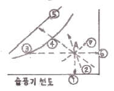
- ④, ③, ①, ⑥, ⑤
- ③, ①, ④, ⑦, ②
- ①, ④, ③, ⑥, ⑤
- ②, ③, ①, ⑦, ⑤
(정답률: 80%)
6. 다음 중 축류식 취출구에 해당되는 것은?
- 팬형
- 펑커루버형
- 머쉬룸형
- 아네모스탯형
(정답률: 72%)
7. 공조시스템에서 실내에서 배기되는 배기와 환기용 외기를 열교환하는 에너지 절약 설비로서 설비비는 증가하나 외기의 최대부하를 감소시키므로 보일러나 냉동기의 용량을 줄일수 있어 중앙 공조시스템에서의 에너지 회수방식으로 많이 사용되는 열교환기의 형식은?
- 증기-물 열교환기
- 공기-공기 열교환기
- 히트 파이프
- 이코노마이저
(정답률: 69%)
8. 냉각탑에 주로 사용하는 축류식 송풍기의 종류로 맞는 것은?
- 리밋로드형 송풍기
- 프로펠러형 송풍기
- 크로스 플로형 송풍기
- 다익형 송풍기
(정답률: 83%)
9. 클린룸(Clean room)에 대한 등급을 나타내는 방법으로 미연방규격을 준용하여, 1fit3의 체적 내에 들어 있는 불순 미립자의 수를 Class 등급으로 나타내는 방법이 있다, 예를 들어 class 100 이라고 함은 입경이 얼마인 불순 미립자의 수를 100으로 제한 한다는 의미인가?
- 0.1 μm
- 0.2 μm
- 0.3 μm
- 0.5 μm
(정답률: 67%)
10. 증기트랩에 대한 설명으로 옳지 않은 것은?
- 바이메탈트랩은 내부에 열팽창계수가 다른 두 개의 금속이 접합된 바이메탈로 구성되며, 워터해머에 안전하고, 과열증기에도 사용 가능하다.
- 벨로즈트랩은 금속제의 벨로즈 속에 휘발성액체가 봉입 되어 있어 주위에 증기가 있으면 팽창되며, 증기가 응축되면 온도에 의해 수축하는 원리를 이용한 트랩이다.
- 플로트트랩은 응축수의 온도차를 이용하여 플로트가 상하로 움직이며 밸브를 개폐한다.
- 버킷트랩은 응축수의 부력을 이용하여 밸브를 개폐하며 상향식과 하향식이 있다.
(정답률: 79%)
11. 실내의 거의 모든 부분에서 오염가스가 발생되는 경우 실 전체의 기류분포를 계획하여 실내에서 발생하는 오염물질을 완전히 희석하고 확산시킨 다음에 배기를 행하는 환기방식은?
- 자연 환기
- 제3종 환기
- 국부 환기
- 전반 환기
(정답률: 87%)
12. 다음 중 축열시스템의 특징으로 맞는 것은?
- 피크 컷(Peak Cut)에 의해 열원장치의 용량이 증가한다.
- 부분부하 운전에 쉽게 대응하기가 곤란하다.
- 도시의 전력수급상태 개선에 공헌한다.
- 야간운전에 따른 관리 인건비가 절약된다.
(정답률: 81%)
13. 흡착식 감습장치에 사용하는 고체흡착제는?
- 실리카겔
- 염화리튬
- 트리에틸렌글리콜
- 드라이아이스
(정답률: 77%)
14. 보일러의 용량을 결정하는 정격출력을 나타내는 것으로 적당한 것은?
- 정격출력=난방부하+급탕부하
- 정격출력=난방부하+급탕부하+배관손실부하
- 정격출력=난방부하+급탕부하+예열부하
- 정격출력=난방부하+급탕부하+배관손실부하+예열부하
(정답률: 79%)
15. 흡수식 냉동기의 특징으로 맞지 않는 것은?
- 기기 내부가 진공에 가까우므로 파열의 위험이 적다.
- 기기의 구성요소 중 회전하는 부분이 많아 소음 및 진동이 많다.
- 흡수식 냉온수기 한 대로 냉방과 난방을 겸용할 수 있다.
- 예냉시간이 길어 냉방용 냉수가 나올 때까지 시간이 걸린다.
(정답률: 80%)
16. 다음 그림은 냉각코일의 선도 변화를 나타낸 것이다. ① : 입구공기, ② : 출구공기, ③ : 포화공기일 때 노점온도(A)와 바이패스 팩터(B) 구간으로 맞는 것은?
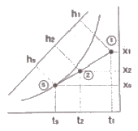
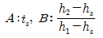
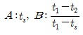
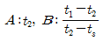
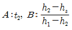
(정답률: 66%)
17. 다익형 송풍기의 경우 송풍기의 크기(NO)에 대한 내용으로 맞는 것은?
- 임펠러의 직경(mm)을 60(mm)으로 나눈 숫자이다.
- 임펠러의 직경(mm)을 100(mm)으로 나눈 숫자이다.
- 임펠러의 직경(mm)을 120(mm)으로 나눈 숫자이다.
- 임펠러의 직경(mm)을 150(mm)으로 나눈 숫자이다.
(정답률: 87%)
18. 건구온도 5℃, 습구온도 3℃의 공기를 덕트 중에 재열기로 건구온도가 20℃로 되기까지 가열하고 싶다. 재열기를 통하는 공기량이 1000m3/min인 경우, 재열기에 필요한 열량은 약 얼마인가? (단, 공기의 비체적은 0.849m3/kg이다.)
- 254,417kcal/min
- 15,000kcal/min
- 8,200kcal/min
- 4,240kcal/min
(정답률: 49%)
19. 공조방식에 관한 특징으로 옳지 못한 것은?
- 전공기방식은 높은 청정도와 정압을 요구하는 병원수술실, 극장 등에 많이 사용된다.
- 수-공기방식은 부하가 큰 방에서도 덕트의 치수를 적게 할 수 있다.
- 개별식은 유닛을 분산시켜 개별제어와 외기냉방에 효과적이다.
- 전수방식은 유닛에 물을 공급하여 실내공기를 가열ㆍ냉각하는 방식으로 극간풍이 많은 곳에 유리하다.
(정답률: 60%)
20. 공기조화의 분류에서 산업용 공기조화의 적용범위에 해당하지 않는 것은?
- 반도체 공장에서 제품의 품질 향상을 위한 공조
- 실험실의 실험조건을 위한 공조
- 양조장에서 술의 숙성온도를 위한 공조
- 호텔에서 근무하는 근로자의 근무환경 개선을 위한 공조
(정답률: 92%)
2과목: 냉동공학
21. 냉매로서 구비해야 할 이상적인 성질이 아닌 것은?
- 임계온도가 상온보다 높아야 한다.
- 증발잠열이 커야 한다.
- 윤화유에 대한 용해도가 클수록 좋다.
- 전열이 양호하여야 한다.
(정답률: 70%)
22. 염화칼슘 브라인 공정점(共晶点)은?
- -15℃
- -21℃
- -33.6℃
- -55℃
(정답률: 74%)
23. 원심 압축기의 용량 조정법에 대한 설명으로 틀린 것은?
- 회전수의 변화
- 안내익의 경사도 변화
- 냉매의 유량 조절
- 흡입구의 댐퍼 조정
(정답률: 50%)
24. Brine의 중화제 혼합비율로 가장 적당한 것은?
- 염화칼슘 100L당 중크롬산소다 100g, 가성소다 23g
- 염화칼슘 100L당 중크롬산소다 100g, 가성소다 43g
- 염화칼슘 100L당 중크롬산소다 160g, 가성소다 23g
- 염화칼슘 100L당 중크롬산소다 160g, 가성소다 43g
(정답률: 72%)
25. 깊이 5m인 밀폐 탱크에 물이 5m 차있다. 수면에는 3kgf/cm2의 증기압이 작용하고 있을 때 탱크 밑면에 작용하는 압력은 얼마인가?
- 35×105kgf/cm2
- 3.5×104kgf/cm2
- 3.5kgf/cm2
- 35kgf/cm2
(정답률: 61%)
26. 다음 설명 중 옳은 것은?
- 냉동능력을 크게 하려면 압축비를 높게 운전하여야 한다.
- 팽창밸브 통과 전후의 냉매 엔탈피는 변하지 않는다.
- 암모니아 압축기용 냉동유는 암모니아보다 가볍다.
- 암모니아는 수분이 있어도 아연을 침식시키지 않는다.
(정답률: 76%)
27. 냉동장치에서 펌프다운을 하는 목적으로 틀린 것은?
- 장치의 저압 측을 수리하기 위하여
- 장시간 정지 시 저압 측으로부터 냉매 누설을 방지하기 위하여
- 응축기나 수액기를 수리하기 위하여
- 기동시 액해머 방지 및 경부하 기동을 위하여
(정답률: 60%)
28. 증기 압축식 이론 냉동사이클에서 엔트로피가 감소하고 있는 과정은 다음 중 어느 과정인가?
- 팽창과정
- 응축과정
- 압축과정
- 증발과정
(정답률: 78%)
29. 암모니아 냉동장치의 브르돈관 압력계 재질은?
- 황동
- 연강
- 청동
- 아연
(정답률: 72%)
30. 냉동장치 운전 중 주의해야 할 사항으로 옳지 않은 것은?
- 액을 흡입하지 않도록 주의한다.
- 압력계 및 전류계 지시를 점검한다.
- 이상음 및 진동 유무를 점검한다.
- 오일의 오염 및 냉각수 통수상태를 점검한다.
(정답률: 77%)
31. 제빙공장에서는 어획량이나 계절에 따라 얼음의 수요가 갑자기 증가하기도 하는데, 이런 경우 설비의 확장이나 생산비를 높이지 않고 일정 기간만 얼음을 증산할 수 있는 방법으로 적당하지 않은 것은?
- 빙관에 있는 모든 물이 완전히 얼음으로 될 때까지 동결하는 방법
- 빙관을 일정 두께까지 동결시킨 후 공간을 둔 채 동결을 중지하는 방법
- 빙관을 두께가지 동결시킨 후 중앙부의 공간에 얼음조각과 물을 넣어서 완전동결하는 방법
- 빙관을 일정 두께가지 동결시킨 후 중앙부의 공간에 설빙을 넣어서 완전동결하는 방법
(정답률: 77%)
32. 증발기 내의 압력을 일정하게 유지할 목적으로 사용되는 팽창밸브는?
- 온도 작동식 팽창밸브
- 유량 제어 팽창밸브
- 응축압력 제어 팽창밸브
- 유압 제어 팽창밸브
(정답률: 58%)
33. 냉장고를 보냉하고자 한다. 냉장고 온도는 -5℃, 냉장고 외부의 온도가 30℃일 때 냉장고 벽 1m2당 10kcal/h의 열손실을 유지하려면 열 통과율을 약 얼마로 하여야 하는가?
- 0.34kcal/m2h℃
- 0.4kcal/m2h℃
- 0.28kcal/m2h℃
- 0.5kcal/m2h℃
(정답률: 56%)
34. 냉동장치를 자동운전하기 위하여 사용되는 자동제어방법 중 정해진 제어동작의 순서에 따라 진행되는 제어방법은?
- 시퀀스제어
- 피드백제어
- 2위치제어
- 미분제어
(정답률: 86%)
35. 아래 그림은 브라인 순환식 빙축열 시스템의 개략도를 나타낸 것이다. (A) 기기의 명칭과 (B) 매체의 명칭으로 맞는 것은?
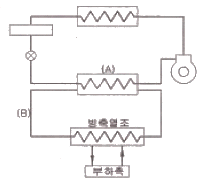
- (A) 증발기, (B) 냉매
- (A) 축냉기, (B) 냉매
- (A) 증발기, (B) 브라인
- (A) 증발기, (B) 냉수
(정답률: 80%)
36. 온도가 500℃인 열용량이 큰 열원으로부터 18,000kcal/h의 열이 공급된다. 이때 저열원은 대기(20℃)이며, 이 두 열원 간에 가역사이클을 형성하는 열기관이 운전된다면 사이클의 열효율은?
- 0.53
- 0.62
- 0.74
- 0.81
(정답률: 41%)
37. 5kg의 산소가 체적2m3로부터 4m3로 변화하였다. 이 변화가 일정 압력하에서 이루어졌다면 엔트로피의 변화는 얼마인가? (단, 산소는 완전가스로 보고, Cp=0.22 kcal/kgK로 한다.)
- 0.33(kcal/K)
- 0.67(kcal/K)
- 0.77(kcal/K)
- 1.16(kcal/K)
(정답률: 51%)
38. 압축기 과열의 원인이 아닌 것은?
- 증발기의 부하가 감소했을 때
- 윤활유가 부족했을 때
- 압축비가 증대했을 때
- 냉매량이 부족했을 때
(정답률: 69%)
39. 다음 상태변화에 대한 기술 내용으로 옳은 것은?
- 단열변화에서 엔트로피는 증가한다.
- 등적변화에서 가해진 열량은 엔탈피 증가에 사용된다.
- 등압변화에서 가해진 열량은 엔탈피 증가에 사용된다.
- 등온변화에서 절대일은 0이다.
(정답률: 65%)
40. CA(Controlled Atmosphere) 냉장고에서 청과물 저장 시 보다 좋은 저장성을 얻기 위하여 냉장고 내의 산소를 몇 % 탄산가스로 치환하는가?
- 3~5%
- 5~8%
- 8~10%
- 10~12%
(정답률: 73%)
3과목: 배관일반
41. 프레온 냉동장치의 배관에 있어서 증발기와 압축기가 동일 레벨에 설치되는 경우 흡입주관의 입상높이는 증발기 높이보다 몇 mm 이상 높게 하여야 하는가?
- 10
- 40
- 70
- 150
(정답률: 70%)
42. 다음 중 체크밸브의 종류가 아닌 것은?
- 스윙형 체크밸브
- 해머리스형 체크밸브
- 리프트형 체크밸브
- 플랩형 체크밸브
(정답률: 63%)
43. 흡수식 냉동기의 단점으로 맞는 것은?
- 기기 내부가 진공상태로서 파열의 위험이 있다.
- 설치면적 및 중량이 크다.
- 냉온수기 한 대로는 냉ㆍ난방을 겸용할 수 없다.
- 소음 및 진동이 크다.
(정답률: 64%)
44. 온수난방에 대한 설명 중 옳지 않은 것은?
- 배관을 1/250 정도의 일정구배로 하고 최고점에 배관 중의 기포가 모이게 한다.
- 고장 수리를 위하여 배관 최저점에 배수 밸브를 설치한다.
- 보일러에서 팽창탱크에 이르는 팽창관에 밸브를 설치한다.
- 난방배관의 소켓은 편심 소켓을 사용한다.
(정답률: 63%)
45. 가스미터 부착상의 유의점으로 잘못된 것은?
- 온도, 습도가 급변하는 장소는 피한다.
- 부식성의 약품이나 가스가 미터기에 닿지 않도록 한다.
- 인접 전기설비와는 충분한 거리를 유지한다.
- 가능하면 미관상 건물의 주요 구조부를 관통한다.
(정답률: 89%)
46. 급수배관 시공 시 바닥 또는 벽의 관통배관에 슬리브를 이용하는 이유로 적합한 것은?
- 관의 신축 및 보수를 위해
- 보온효과의 증대를 위해
- 도장을 위해
- 방식을 위해
(정답률: 86%)
47. 지름 20mm 이하의 동관을 이음할 때나 기계의 점검, 보수 등으로 관을 떼어내기 쉽게 하기 위한 동관의 이음방법은?
- 슬리브 이음
- 플레어 이음
- 사이징 이음
- 플라스턴 이음
(정답률: 79%)
48. 다이어프램 밸브의 KS 그림기호로 맞는 것은?
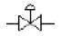
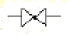
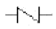
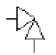
(정답률: 83%)
49. 저탕조 내의 온수가열관으로 가장 적합한 것은?
- 강관
- 폴리부틸렌관
- 주철관
- 연관
(정답률: 61%)
50. 배수트랩이 하는 역할로 가장 적합한 것은?
- 배수관에서 발생한 유해가스가 건물 내로 유입되는 것을 방지한다.
- 배수관 내의 찌꺼기를 제거하여 물의 흐름을 원활하게 한다.
- 배수관 내로 공기를 유입하여 배수관 내를 청정하는 역학을 한다.
- 배수관 내의 공기와 물을 분리하여 공기를 밖으로 빼내는 역할을 한다.
(정답률: 77%)
51. 열팽창에 의한 관의 신축으로 배관의 이동을 구속 또는 제한하는 장치는?
- 턴버클
- 브레이스
- 리스트 레인트
- 행거
(정답률: 66%)
52. 감압밸브 주위 배관에 사용되는 부속장치이다. 적당하지 않은 것은?
- 압력계
- 게이트밸브
- 안전밸브
- 콕(cock)
(정답률: 76%)
53. 스테인리스 강관의 특성에 대한 설명으로 틀린 것은?
- 위생적이어서 적수, 백수, 청수의 염려가 없다.
- 내식성이 우수하고 계속 사용 시 내경의 축소, 저항 증대 현상이 적다.
- 저온 충격성이 크고, 한랭지 배관이 가능하며 동결에 대한 저항도 크다.
- 강관에 비해 기계적 성질이 약하고, 용접식ㆍ몰코식 이음법 등 특수시공법으로 인해 시공이 어렵다.
(정답률: 76%)
54. 팬 코일 유닛의 배관방식 중 냉수 및 온수관이 각각 있어서 혼합손실이 없는 배관방식은?
- 1관식
- 2관식
- 3관식
- 4관식
(정답률: 71%)
55. 다음은 한량지에서의 배관요령이다. 틀린 것은?
- 동결할 위험이 있는 장소에서의 배관은 가능한 피한다.
- 동결이 염려되는 배관에는 물 배기 장치를 수전 가까이 설치한다.
- 물 배기 장치 이후 배관은 상향구배로 하여 물 빼기가 용이하게 한다.
- 한랭지에서의 배관은 외벽에 매입한다.
(정답률: 69%)
56. 우수 수직관 관경에 따른 허용 최대 지분 면적(m2)으로 적당하지 않은 것은? (단, 지붕 면적은 수평으로 투영한 면적이며, 강우량은 100mm/h를 기준으로 산출한 것이다.)
- 50A-67m2
- 65A-135m2
- 75A-197m2
- 100A-325m2
(정답률: 58%)
57. 다음 중 주철관의 접합방법이 아닌 것은?
- 플랜지 접합
- 매커니컬 접합
- 소켓 접합
- 플레어 접합
(정답률: 73%)
58. 강관을 재질상으로 분류한 것이 아닌 것은?
- 탄소 강관
- 합금 강관
- 스테인리스 강관
- 전기용접 강관
(정답률: 85%)
59. 팽창탱크를 설치하지 않은 온수난방장치를 작동하였을 때 일어나는 현상으로 적당한 것은?
- 온수 저장이 곤란하다.
- 온수 순환이 안 된다.
- 배관의 파열을 일으키게 된다.
- 온수 순환이 잘 된다.
(정답률: 77%)
60. 급탕설비에서 80℃의 물 300L와 20℃의 물 200L를 혼합시켰을 때 혼합탕의 온도는 얼마인가?
- 42℃
- 48℃
- 56℃
- 62℃
(정답률: 61%)
4과목: 전기제어공학
61. 제어대상에 속하는 양으로 제어장치의 출력신호가 되는 것은?
- 제어량
- 조작량
- 목표값
- 오차
(정답률: 62%)
62. 시퀀스 회로에서 접점이 조작하기 전에는 열려 있고 조작하면 닫히는 접점은?
- a접점
- b접점
- c접점
- 공동접점
(정답률: 82%)
63. 다음은 분류기이다. 배율은 어떻게 표현되는가? (단, Rs : 분류기의 저항, Ra : 전류계의 내부저항)
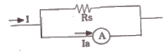
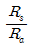
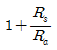
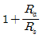
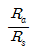
(정답률: 63%)
64. 그림과 같은 블록선도에서 전달함수 ,C/R는?
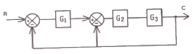
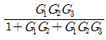
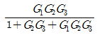
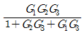
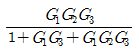
(정답률: 75%)
65. 자동제어의 분류에서 제어량의 종류에 의한 분류가 아닌 것은?
- 서보기구
- 추치제어
- 프로세스제어
- 자동조정
(정답률: 52%)
66. 제어기기 중 전기식 조작기기에 대한 설명으로 옳지 않은 것은?
- 장거리 전송이 가능하고 늦음이 적다.
- 감속장치가 필요하고 출력은 작다.
- PID 동작이 간단히 실현된다.
- 많은 종류의 제어에 적용되어 용도가 넓다.
(정답률: 63%)
67. 논리식
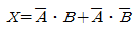
를 간단히 하면?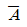
- A
- 1
- B
(정답률: 67%)
68. 그림과 같은 회로에서 각 저항에 걸리는 전압 V1과 V2는 각각 몇[V]인가?
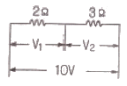
- V1=10, V2=10
- V1=6, V2=4
- V1=4, V2=6
- V1=5, V2=5
(정답률: 69%)
69. 다음 중 직류 분권전동기의 용도에 적합하지 않은 것은?
- 압연기
- 제지기
- 권선기
- 기중기
(정답률: 79%)
70. 1[Ω]의 저항에 흐르는 전류는 몇 [A]인가?
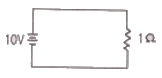
- 0.1
- 1
- 10
- 100
(정답률: 74%)
71. 콘덴서만의 회로에서 전압과 전류의 위상관계는?
- 전압이 전류보다 180도 앞선다.
- 전압이 전류보다 180도 뒤진다.
- 전압이 전류보다 90도 앞선다.
- 전압이 전류보다 90도 뒤진다.
(정답률: 73%)
72. 10[kVA]의 단상변압기 3대가 있다. 이를 3상 배전선에 V결선했을 때의 출력은 몇 [kVA]인가?
- 11.73
- 17.32
- 20
- 30
(정답률: 66%)
73. 대칭 3상 Y부하에서 각 상의 임피던스 Z=3+j4[Ω]이고, 부하전류가 20[A]일 대, 이 부하의 선간전압은 약 몇 [V]인가?
- 141
- 173
- 220
- 282
(정답률: 68%)
74. 다음 중 입력장치에 해당되는 것은?
- 검출 스위치
- 솔레노이드 밸브
- 표시램프
- 전자개폐기
(정답률: 68%)
75. 컴퓨터 제어의 아날로그 신호를 디지털 신호로 변화하는 과정에서, 아날로그 신호의 최대 값을 M, 변환기의 bit수를 3이라 하면 양자화 오차의 최댓값은 얼마인가?
- M
- M/2
- M/7
- M/8
(정답률: 76%)
76. 정전용량 C[F]의 콘덴서를 △결선해서 3상 전압 V[V]를 가했을 때의 충전용량은 몇[VA]인가? (단, 전원의 주파수는 f[Hz]이다.)
- 2πfCV2
- 6πfCV2
- 6πf2CV
- 18πfCV2
(정답률: 62%)
77. 일정 토크부하에 알맞은 유도전동기의 주파수 제어에 의한 속도제어 방법을 사용할 때, 공급전압과 주파수의 관계는?
- 공급전압과 주파수는 비례되어야 한다.
- 공급전압과 주파수는 반비례되어야 한다.
- 공급전압은 항상 일정하고, 주파수는 감소하여야 한다.
- 공급전압의 제곱에 비례하는 주파수를 공급하여야 한다.
(정답률: 62%)
78. 유도전동기의 원선도 작성에 필요한 기본량이 아닌 것은?
- 무부하 시험
- 저항 측정
- 회전수 측정
- 구속 시험
(정답률: 46%)
79. 그림과 같은 시스템의 등가합성 전달함수는?
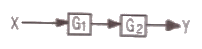
- G1+G2
- G1ㆍG2
- G1-G2
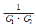
(정답률: 82%)
80. x1+Ax3+x2=x3로 표현된 신호흐름선도는?
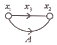
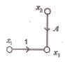
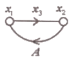
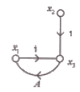
(정답률: 73%)